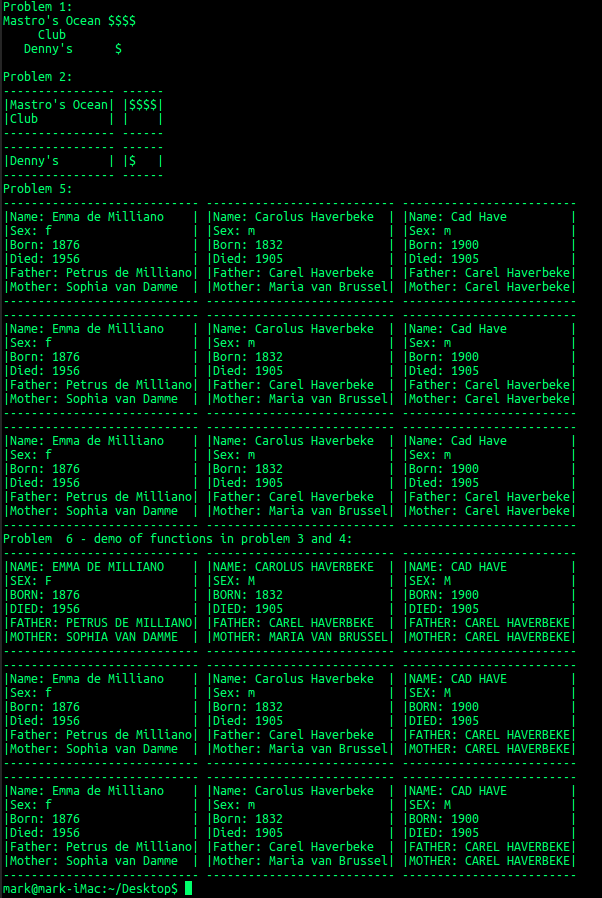

Modify the table program in Chapter 6 of Eloquent JavaScript by:
1. Adding a new constructor named CenteredTextCell that creates a cell where all the lines in the cell are center-justified. That is, the draw method of this type of cell draws centered text (if there is an uneven number of padding spaces, put the extra one on either side). Test it by drawing a table with at least 2 rows and 2 columns with centered text. (5pts)
2. Add a BorderedCell constructor that makes cells with a border. That is, the top of the cell has dashes (use single dash, don't use underscore) across it, as well as the bottom. For the sides, use a "|". Test it by drawing a table with at least 2 rows and 2 columns with bordered text. (5pts)
3. Write a function that takes a row number and the main cell array and transforms all the text for all the cells in that row to uppercase. You must use Array.prototype.map. (5pts)
4. Write a function that takes a column number and the main cell array and transforms all the text for all the cells in that column to uppercase. You must use Array.prototype.map. (5pts)
5. Write a function that takes a Person, defined in Chapter 5 of Eloquent JavaScript (used for the author's ancestry; make sure you include all the properties and define them exactly like they are defined in Chapter 5), and converts it to a BorderedCell by taking all the information in the person and writing each one on a new line (along with the property name) to be displayed in the cell. Create a 3x3 matrix of 9 fictional (they can repeat). Using Array.prototype.map, write a function that takes a matrix of Persons and converts it to a matrix of BorderedCells. Use this function to transform your 3x3 array. Print out a table with this information using the table code. (10pts)
6. Using the functions from #3 and #4, transform the first row of the above table to uppercase, and the last column, and redraw. Note, if you don't do this step, you will not get credit for #3 and #4, for this is our way of making sure you implemented your functions properly. (3pts)
Your console output should look like this:

Use functional programming (here, the higher order functions we covered) in all your functions (problems 3, 4, and 5). Don't just try to do it with loops, or you will not receive credit. You may use for loops inside the already existing code, but you may not add any yourself. Your functions from these three problems shouldn't have any side effects (don't manipulate a global variable or print anything). Also, this program will be run on Node — don't submit any code with any DOM scripting or anything else meant for a browser. Submit one JavaScript file here.
Note: I would caution against using the dataTable function in chapter 6 of EJS, as it's meant to work on a 1D array of object-rows instead of the 2d array of cells we were using in class.